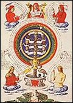

La première sefira représente Dieu, le Créateur. Cette incarnation divine dépourvue de forme ne peut être comprise qu'en faisant un avec elle, c'est le but ultime de la quête kabbalistique.
Elle est appelée « couronne » car elle apporte à l'homme le pouvoir absolu, suprême, tout en étant distincte de son corps, elle n'est posée que sur sa tête.
On l'associe à l'image du point, objet sans dimension.
La deuxième sefira représente l'énergie pure, créatrice mais pouvant être chaotique. Elle est expansion et représente le principe masculin. Le kabbaliste qui parvient à ce stade a compris les principes qui ont présidé à la création de l'univers.
Elle est appelée « sagesse » car elle incarne l'ultime état primordial avant la fusion totale avec Dieu.
On l'associe à l'image du point en mouvement qui forme une ligne et acquiert la première dimension.
Sefira invisible et non comptabilisée dans l'Arbre de Vie, Daath n'est qu'une étape entre Kheter et Tiphereth.
Elle n'est pas le savoir positif et statique mais le ressenti, l'intelligence émotionnelle résultant d'une expérience existentielle.
3. Binah, « l'intelligence, la compréhension »
La troisième sefira représente la matrice, le principe féminin, la Mère dans toute son ambiguïté, celle qui canalise l'énergie pour donner la vie mais qui peut aussi l'absorber. Le kabbaliste qui parvient à ce niveau comprend comment l'univers a été formé.
Elle est appelée « intelligence » ou « compréhension » car d'une manière générale, c'est la sefira de la compréhension intime des mécanismes primordiaux de toute chose.
La ligne devient triangle et la deuxième dimension apparaît.
4. Chesed, « l'amour, la miséricorde »
La quatrième sefira représente le réceptacle de tous les pouvoirs. Elle est cohésion et multiplicité. On l'associe aux principes d'ordre, de synthèse et d'assimilation.
Moins primordiale et primitive que Chokmah, elle est le père qui donne la vie. Miséricordieux, celui-ci incarne les puissances créatrices raisonnées et la puissance juste et généreuse.
La figure géométrique associée est le carré.
5. Geburah, « la rigueur, la sévérité »
La cinquième sefira représente la force et le courage. Souvent violente, elle incarne les puissances qui forment le corps et l'esprit mais aussi la guerre et la rigueur militaire.
Bien qu'elle soit souvent associée au principe du Mal, ce n'est pas une sefira maléfique car l'ordre et le chaos sont 2 principes indispensables à l'équilibre du monde. Elle est parfois appelée Pechad, « la crainte », ou Din, « la justice », bien qu'elle soit qualifiée de sévère. Il faut alors la considérer comme étant la balance qui permettra de rendre le jugement final.
La figure géométrique associée est le pentagone.
6. Tiphereth, « l'harmonie, la beauté »
La sixième sefira représente la beauté, l'harmonie des formes et des idées. Située au centre de l'Arbre de Vie, c'est un carrefour à partir duquel le kabbaliste a nettement plus de difficultés à s'orienter. C'est ici qu'il appréhende les niveaux les plus profonds des mondes de la Kabbale.
Associée à la Lumière, cette sefira est un lieu où la transmutation des énergies est possible ; en ce sens, on l'associe parfois au principe de sacrifice.
La figure géométrque qui la symbolise est l'hexagone.
La septième sefira représente l'élan mystique, l'union de l'intellect et de la foi. Elle est la sphère des sentiments et des émotions. C'est la sefira du réconfort et également celle de la guérison.
Elle est appelée « victoire » car elle symbolise le but qui a été atteint, l'adéquation.
La figure géométrique associée est l'heptagone.
8. Hod, « la splendeur, la gloire »
La huitième sefira représente la rigueur intellectuelle, l'analyse et la compréhension. Elle est associée aux formalismes, à la logique et au rationalisme. Sous son influence, la kabbaliste cherche à comprendre un objet en l'analysant.
Elle est appelée « gloire » car elle exprime la reconnaissance du savoir maîtrisé. Elle est aussi la gardienne des secrets, des savoirs et de la mémoire du monde.
La figure géométrique associée est l'octogone.
La neuvième sefira représente la base de toute chose, l'ébauche de la réalisation de notre monde physique. En tant qu'union des principes de Netzah et de Hod, elle est plaisir et jouissance.
Sefira de l'illusion, elle est la première véritable difficulté que rencontre le kabbaliste sur le chemin de sa quête ; il doit commencer par apprendre à voir au-delà des apparences.
La figure géométrique associée est l'ennéagone.
La dixième sefira représente le royaume, le réceptacle de toutes les influences. Elle matérialise les plans imaginés par Yesod. C'est la sefira la plus proche de notre monde physique ; elle est notre univers, notre planète, notre corps et tout ce qui nous entoure.
La figure géométrique associée est le décagone.
